About Me
Welcome to my portfolio! This section slides up to reveal more details about my work and experience. You can return to the 3D scene by clicking the logo in the top left.
Project One
Description of a cool project using Three.js and Vite.
Project Two
Another impressive piece of work worth showcasing here.